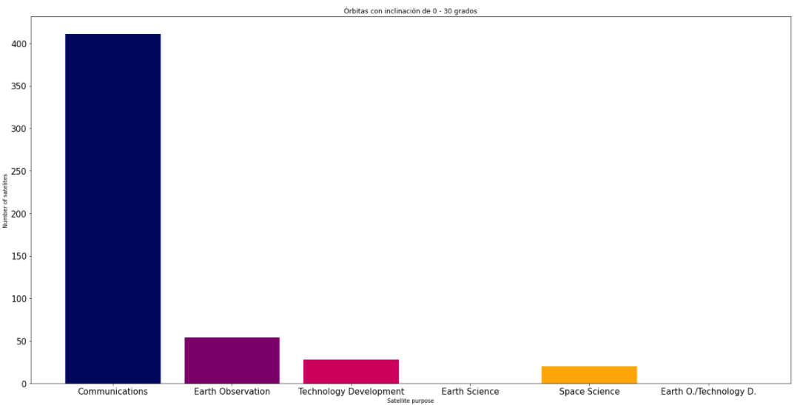

Explorando el espacio a través de la pantalla: Ciencia de datos como apoyo al diseño de misiones espaciales
Club18: 13,800 millones de años de viaje, la historia del Universo
Proyecto final de Clubes de Ciencia 2021
Introducción
La exploración espacial ha jugado un papel importante en la historia de la humanidad. Gracias a ellos cada uno de nosotros tiene al alcance de sus manos imágenes de objetos que se localizan a cientos o miles de kilómetros de distancia de nosotros y no solo eso, también nos ha llevado a pensar en viajar a otros planetas o inclusive a otras galaxias. Pero dinos ¿realmente conoces que implica un viaje espacial o que ciencias están de tras de la uno? Siempre es importante conocer los fundamentos y un poco de historia, por eso en el Club 18: 13,800 millones de años de viaje, la historia del Universo, nos platicaron acerca de cuáles son los componentes principales del cosmos y cómo tenemos evidencia de ellos gracias a misiones espaciales como el telescopio Hubble o el satélite Planck. También vimos el papel de las futuras misiones como LISA y la detección de ondas gravitacionales.
La problemática
Visualización del espacio
Distribución de satélites con órbitas hasta 500 km
Según la UCS Satellite Database en esta órbita se mantienen alrededor de 570 satélites, en su mayoría con un propósito comercial destinado a las comunicaciones. También notamos una alta presencia de satélites militares y gubernamentales, al igual que en la Tierra, existen las bienes y raices en el espacio, lamentablemente la presencia de satélites destinados a conocer el espacio y nuestro mundo no son abundantes a esta altura.
Distribución de satélites con órbitas de 500 km hasta 1000 km
En [itas e 500 a 1000 km encontramos un caso muy particular, ya que los satélites de Starlink mandados al espacio por SpaceX, son por mucho, los objetos más abundantes en esta zona. Nuevamente se puede apreciar la privatización del espacio.
Vemos que los cambios son abrumadores, ya que la ibservación de la Tierra pasa de sere el 25% a ser el mayor porcentaje con 52.8%. Un claro ejemplo de la inmensa cantidad de maquinaria privada que hay en estas órbita.
Distribución de satélites con órbitas de 1000 km hasta 10000 km
Nuevamente vemos la gran presencia de satéites comerciales. En un mundo tan conectado como en el que tenemos hoy en día es dificil materializar la cantidad de máquinas que hay flotando a nuestro alrededor, este rango de altitudes es otro ejemplo de cómo y dónde se distribuyen las telecomunicaciones, es importante estar conectados pero también es importante tener satélites para conocer nuestro propio planeta y el espacio exterior. La diferencia en la cantidad de satélites que cumplen esos proósitos es sorpendente.
Distribución de satélites con órbitas de 5000 km hasta 40000 km
Avanzamos en la altura y no vemos un cambio radical en la distribución, vemos una gran cantidad de satélites en lo que se conoce como la Órbita Geosincrónica, en la cual se ponen satélites que sigan el movimiento de la tierra sincrónicamente. Algún día la tecnología en la Tierra va a alcanzar la de los satélites y será necesario cambiarlos. Suena fácil, sin embargo, los antiguos satélites pasarían a ser parte de la basura espacial. Estaríamos generando un espacio de objetos inutilizables alrededor de nosotros.
Distribución de satélites con órbitas de 40000 km hasta 165000 km
Hemos llegado a las órbitas más lejanas, donde pocos satélites se encuentran. Como vimos lo vimos en el Club, a mayores alturas se tiene menos contaminación que puede interferir con la exploración espacial. A diferencia de las otras órbitas en estas no hay satélites de comunicaciones, todo es dirigido hacia la ciencia espacial y en su maypría es por parte de esfuerzos gubernamentales. El comparar 30 satélites científicos en esta órbita con los 1633 de comunicaciones a 500 km tal vez no sea una comparación valiosa, pero nos dice hacia donde van los esfuerzos en tecnología y cómo se distribuirá en un futuro la basura espacial.
Distribución de las órbitas de los satélites
 Inclinación de 0 a 30 gradosInclinación de 30 a 60 grados
En la gráfica de 30 a 60 grados se encuentran escondidos sobre una misma inclinación los satélites de Starlink, esta es una comparativa de cómo sería si no estuvieran.
Inclinación de 60 a 90 grados
Metodolgía
Para crear este proyecto tomamos los datos de una base de datos de la Union of Concerned Scientists, en la cual se describe a detalle los 4084 satélites que actualmente orbitan nuestro planeta. Incluyendo su país de origen, el propósito y otros detalles de operación.La base de datos contiene 28 tipos de datos sobre los satélites, como su masa, potencia, fecha de lanzamiento, esperanza de vida. También detalles sobre su órbita como su apogeo, perigeo, inclinación y periodo.
Para crear las gráficas de puntos tomamos la media entre perigeos y apogeos para saber la altura media. Posteriormente usamos la librería de Matplotlib para graficar los puntos en coordenadas polares, el ángulo está dado por números aleatorios para distribuir los satelites homogeneamente.
Adicionalmente en la construcción del análisis de los datos de la USC se empleó las librerías de seaborn y plolty para la construcción de gráficas. Para cumplir con el reto del Club 18, se empleó la librería de Poliastro para el diseño de nuestra misión espacial propuesta.
Next steps
- Fase de crucero interior 1: Colocar la nave al rededor Sol.
- Fase de crucero interior 2: Sobrevuelo alrededor de la Tierra. Se realiza la asistencia por gravedad.
- Fase de crucero interior 3: Maniobra de inserción en la órbita Júpiter.
Visualualizando la UCS Satellite Database


Con la información contenida en el dataset de la USC podemos construir una representación de la localización de los sat1elites según la altura a la cual se encuentran de la Tierra. Y como se observa en la imagen se arriba la mayoría se encuentra. Como se observa en la figura de “Satélites activos en órbita baja \ terrestre por debajo de 1000 km\ 01 May 2021”, la mayor concentración de satélites radica entre los 100 y 400 km por encima de la Tierra, siendo evidente que debajo de la linea de Karman que límite entre atmósfera y espacio exterior, no hay satelites.
Analizando la UCS Satellite Database. ¿Qué información podemos obtener?
Los 4084 satelites que la base de datos del USC nos proporciona orbitas de clase LEO, GEO, Eliptica o MEO.Si se realiza un histograma de frecuencias considerando el tipo de orbita, podemos observar que los satelites con orbitas tipo LEO son los más comunes con más de 3000 ejemplares. Las orbitas LEO o Low Earth Orbit se encuentran relativamente cerca de la superficie de la Tierra, a una altitud de menos de 1000 km, pero podría estar tan bajo como 160 km sobre la Tierra. Seguido tenemos a los tipo GEO y por último a los tipo LEO
Los satélites con orbitas GEO u orbitas geoestacionarias son aquellos que necesitan permanecer constantemente sobre un lugar particular de la Tierra, como los satélites de telecomunicaciones y monitoreo del clima. De esta forma, se puede fijar una antena en la Tierra para que permanezca siempre apuntando hacia ese satélite sin moverse. Como se ve en el histograma de longitudes estos se encuentran ampliamente repartidos por los dos hemisferios el planeta, siendo a los -100 grados, la coordenada con mayor número de satélites a esa altura.
Para determinar cuál es la cantidad de satélites en uso, se ocupó una población de 4084 satélites del dataset de la USC, en donde se obtuvieron tres tipos de muestras, para poder visualizar dichas muestras en porcentajes, se muestra una gráfica en forma de pastel,con el uso de esta gráfica pudimos hacer alusión a dos cosas que el 45.7% son los satélites que están activas asta nuestros días, el 40.5% no se sabe si está en uso o se consideraría basura espacial.
Basura espacial
El espacio va en camino de convertirse en un basurero: satélites inservibles, partes de cohetes y herramientas. ¿Se puede recolectar la chatarra espacial? ¿A quién pone en peligro? Al igual que Zulfikar Abbany en su publicación los investigadores realizan estas preguntas y para ello están trabajando para reducir las amenazas que plantean más de 20.000 objetos en el espacio.Pero la verdadera pregunta nace en ¿Por qué es peligrosa la basura espacial?, ¿se están creando grandes desprecios como en la tierra?, para ello nos remontamos unos minutos 2009 en el espacio, cuando un satélite comercial estadounidense Iridium se estrelló contra un satélite de comunicaciones ruso inactivo llamado Cosmos-2251, creando miles de nuevas piezas espaciales que ahora amenazan a otros satélites en la órbita terrestre baja, la zona que se extiende hasta 2.000 kilómetros de altitud.

Espacio sucio
Los científicos desde los 60 han estado preocupados por la basura espacial, esto empezó con un proyecto militar, el cual consistía en poner en órbitas unas agujas destinadas a permitir las comunicaciones por radio, por supuesto este revuelo fue pasado de alto y en 1963 fue lanzado con éxito creando un cinturón reflectante, en los siguientes tres años varios de las agujas se salieron de órbita. Cada día, el ejército de los EE. UU. Emite un promedio de 21 advertencias de posibles colisiones espaciales. Es probable que esos números aumenten dramáticamente el próximo año, cuando la Fuerza Aérea encienda una nueva y poderosa instalación de radar en Kwajalein en el Océano Pacífico. Esa instalación permitirá al ejército estadounidense detectar objetos más pequeños que el límite actual de 10 centímetros para la órbita terrestre baja.
Viajando a Jupiter desde la Tierra en el 2026
La misión espacial propuesta por nuestro equipo consiste en lanzar un repetidor interestelar desde la Tierra a Júpiter, con el fin de aumentar el rango de detección de las señales de las sondas espaciales que se encuentran a grandes distancias como son Vayaer 1, Voyager 2 y Pioner 11. Para realizar esta labor se requiere un receptor que tenga una antena receptora que sirva para captar la señal de las sondas interestelares, un circuito repetidor que amplifique la señal hacia la Tierra y paneles solares que mantengan funcionando el repetidor durante al menos 25 años. La ventana de lanzamiento se programó con ayuda del Trajectory Browser de la Nasa ,el cual se utilizó para obtener las fechas de lanzamiento y de asistencia gravitacional que la misión requiere para llegar a su destino. Adicionalmente se hizo uso de la paquetería de Poliastro para diseñar la trayectoria del viaje espacial.
La misión consistirá en un viaje de ida sin retorno. Los cálculos del diseño de la trayectoria se realizaron considerando un vehículo de lanzamiento Atlas V-551. El recorrido de la nave desde la Tierra hasta Jupiter tendrá 3 maniobras, mismas que realizó la misión espacial Junoen 2011:
Para ver el código utilizado para crear las gráficas y representaciones incluidas en esta página web, así como otras graficas que se realizaron pero no se incluyeron en la página web por el espacio puede visitar nuestro colab
Bibliografía
Satellite Database. (2021, 1 mayo). Union of Concerned Scientists. https://www.ucsusa.org/resources/satellite-databaseEl equipo
Alejandro Ruiz Diego
Estudiante
Abigail Flores Villeda
Estudiante
Eduardo Cen Chan
Estudiante